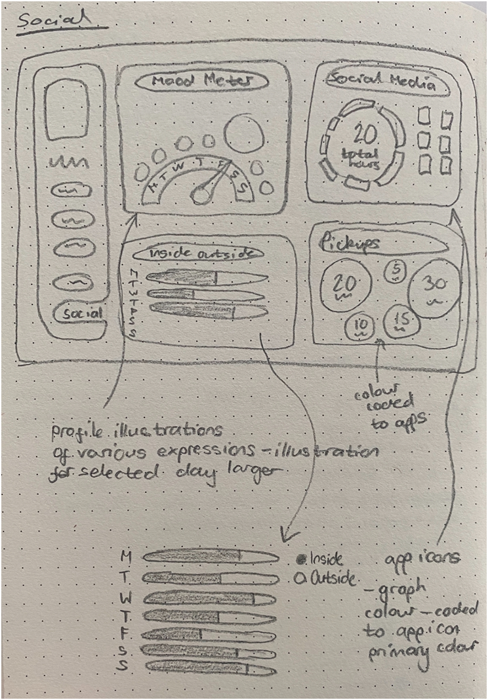
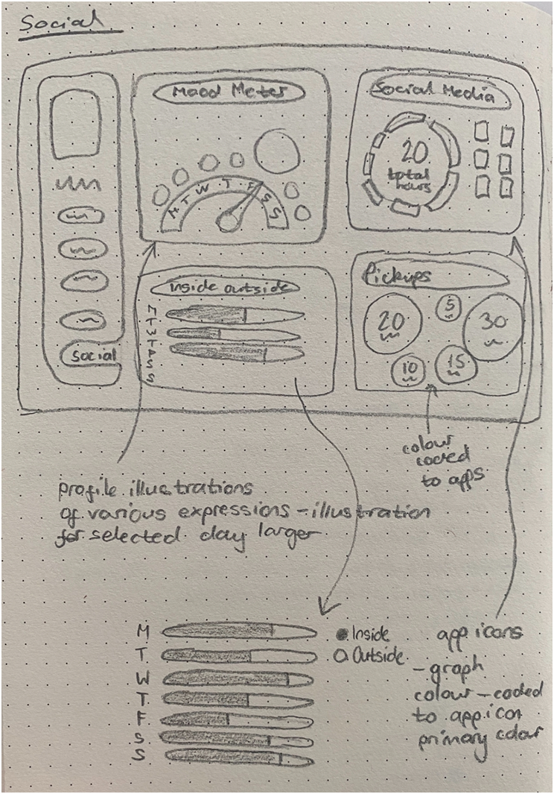
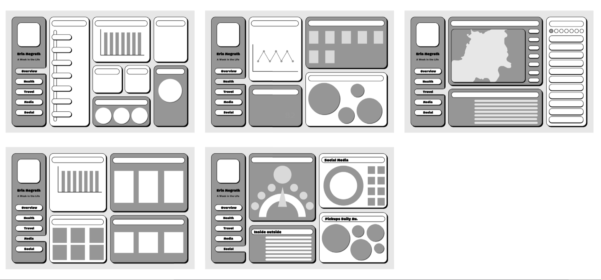
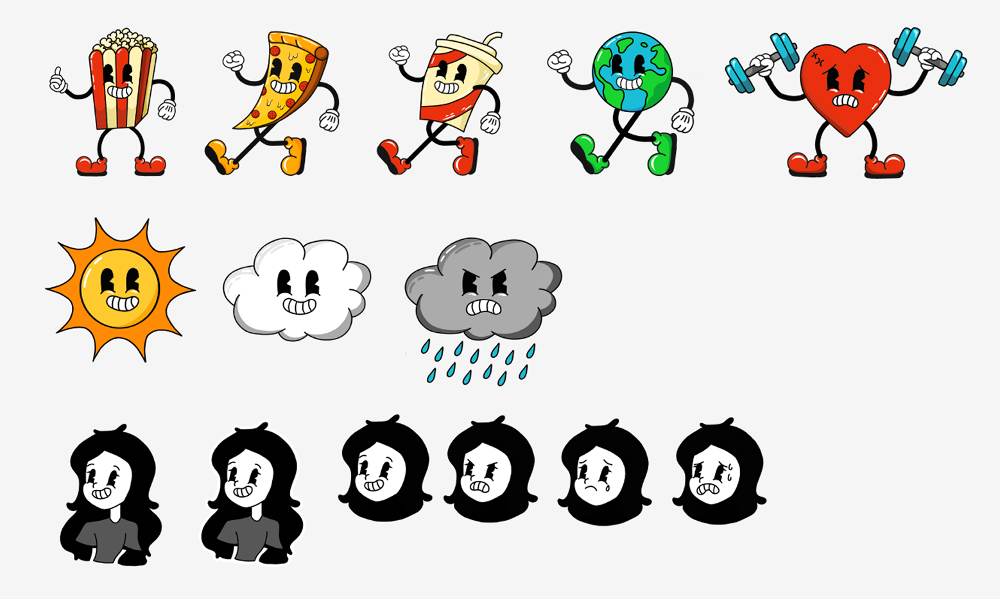
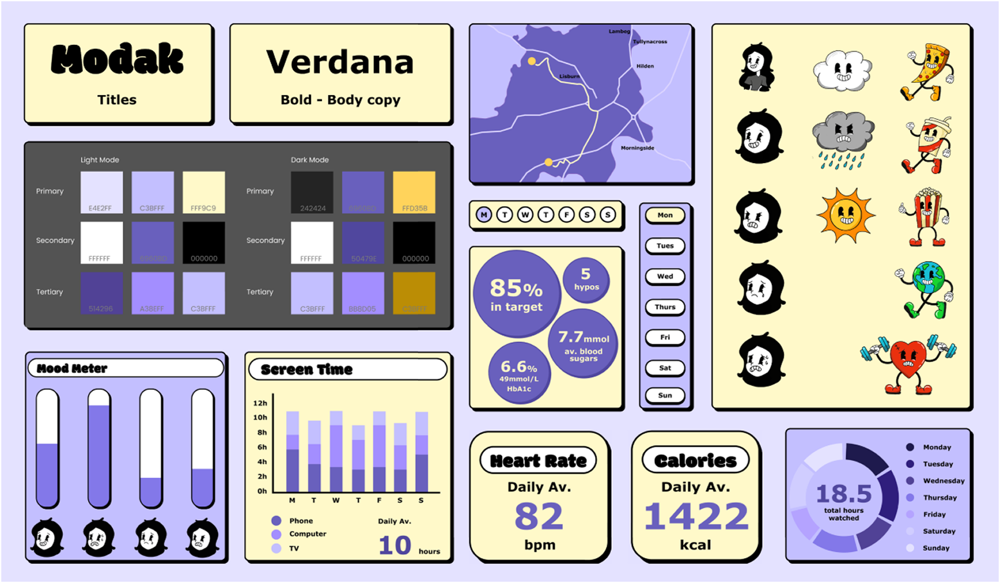

Zippy
Your dashboard with a dash of fun.
Zippy is a playful personal dashboard that provides the user with a clear snapshot of their world at a glance. It transforms everyday metrics into something more engaging by weaving together health, travel, media, and social insights in a way that feels lively and personal.
Brief
The brief was to capture and present a week in our lives through a diagrammatic dashboard, translating everyday activities into clear, visualised data.
Ideation
For this dashboard, I wanted to push myself in a different direction—experimenting with a more playful style that would let me showcase my illustration skills and appeal to a younger audience, something I hadn't explored before. I chose a neo‑brutalist approach combined with rubber‑hose animation characters to give the design personality, energy, and a distinctive visual identity. From there, I defined the key categories I wanted to include: health, travel, media, social, and an overview page. While I considered focusing solely on health data—an area I'm already familiar with—I was excited to explore ideas for the other categories too, such as mapping travel activity and finding engaging ways to present media like music and TV.
Sketching
After collecting the data for each category, I began sketching out wireframes to map the overall structure. I wanted to include a variety of chart types that could be reused across different sections, rather than filling the dashboard with unnecessary visuals.
Because the overview screen relied heavily on Bento Boxes, I used typography alone to present certain metrics, such as daily averages for heart rate or calories consumed. This helped avoid visual clutter while still keeping the information clear and accessible. I also experimented with using illustrations to present data in a more immediate way. For instance, the weather section relied on simple visuals, which felt like the quickest and most intuitive way for users to understand the information at a glance.
 

Digital Development
I began with low‑fidelity wireframes to make sure the layout felt balanced and that the Bento Boxes fitted neatly together without creating clutter. Once the structure was in place, I developed a set of illustrations, paying close attention to consistency so they felt cohesive across the dashboard. From there, I moved into high‑fidelity screens and created a style guide to lock in the visual language as well as creating a dark mode variation for each screen.
The final designs felt much more personal and playful than my usual style, and I was really pleased with how the screens popped with character while still feeling seamless and functional.
  
Prototyping
Prototyping involved some extra work as I created both light and dark mode variations, which meant carefully linking and testing a larger number of screens.
Although it took additional effort to ensure everything connected smoothly, I was pleased with how cohesive the final prototype felt and how satisfying it was to see the whole system working together.
Final Design
I was pleased with how many screens I produced, resulting in a well‑fleshed‑out app that felt unique and seamless. Developing and refining the user flow was especially enjoyable, as it brought the whole experience together.